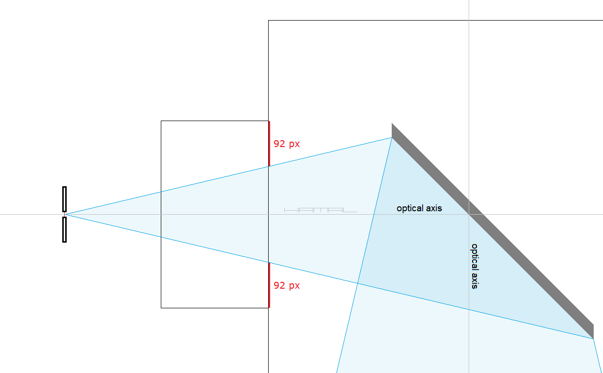
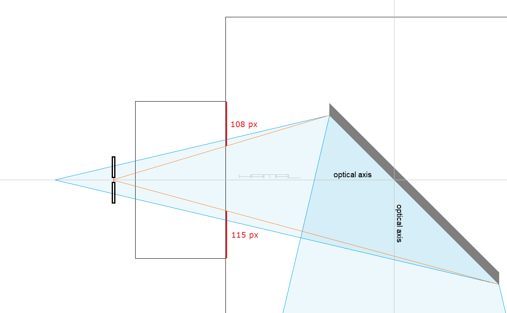
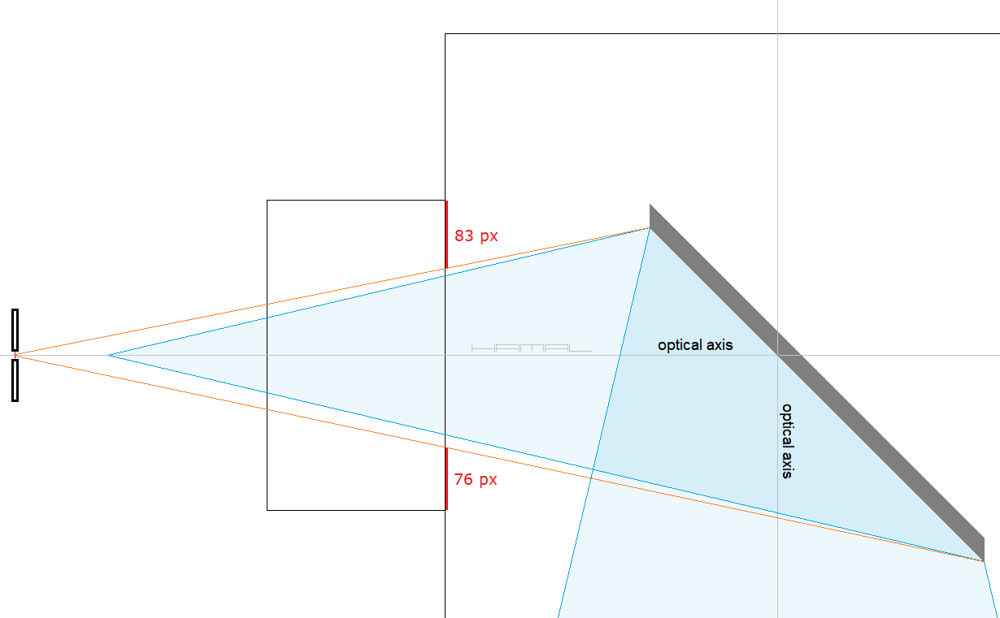

RIGOR . The key condition for the correct adjustment
of the secondary mirror in the Newton system telescope
When collimating a telescope with a pinhole collimator, the pinhole through which you are looking should be at the telescope's focal point, because the inside of the focuser tube, and the secondary mirror, are observed through the collimator angularly, not parallel.
The figure below illustrates the course of a typical discussion in which it was erroneously inferred that the offset of the secondary mirror causes nothing we see through the collimator to be symmetrically located when collimating the telescope.
See the green arrows -->Discussants write: When looking along the walls of the focuser tube, because of the offset of the secondary mirror, it will not be seen symmetrically with respect to the walls of the focuser tube. -- Well it will not be symmetrical, because the secondary mirror has an offset. This observation does not make sense. .
Moreover ....
.
See the yellow arrow -->The discussants write: When we look through the opening of the collimator and observe the secondary mirror, we will not see it symmetrically with respect to the walls of the focuser tube, due to the fact that it has been fixed asymmetrically. -- In fact, you can see in the graphic below that the distance at the top is 105 pixels and the distance at the bottom is 110 pixels. One might think they are right, and yet they are wrong. The observation made is due to a lack of knowledge and application of the rigor described here, the cause is not the offset of the secondary mirror, as they write.
So let's see what happens when, using the rigor described here, we verify the correctness of the collimation with a collimator pinhole placed at the focus point. It turns out that, looking through the collimator from the telescope's focus point, a properly mounted secondary mirror, having the correct offset value, will be seen symmetrical in the focuser, and the distance, from the outline of the secondary mirror, to the walls of the focuser tube, will be the same everywhere!

So, let's check what happens when, after the correct collimation of the telescope is done, the verification of the correctness is done with a collimator placed in front of the focus spot. It turns out that when looking through a pinhole collimator (from the wrong place), a properly mounted secondary mirror, having the correct offset, will not be seen symmetrical in the focuser tube, and the distance, from the outline of the secondary mirror, to the walls of the focuser tube, will not be the same everywhere. Failure to apply the rigor described here will cause that, when evaluating the correctness of collimation, we will erroneously conclude that the verified elements of the telescope are aligned incorrectly.

So, let's check what happens when, after the correct collimation of the telescope is done, the verification of the correctness is done with a collimator placed behind the focus spot. It turns out that when looking through a pinhole collimator (from the wrong place), a properly mounted secondary mirror, having the correct offset, will not be seen symmetrical in the focuser tube, and the distance, from the outline of the secondary mirror, to the walls of the focuser tube, will not be the same everywhere. Failure to apply the rigor described here will cause that, when evaluating the correctness of collimation, we will erroneously conclude that the verified elements of the telescope are aligned incorrectly.

The conclusion? In order to properly collimate a telescope, either with a hole collimator or a camera, it is necessary to apply the rigor described here.
- focus - focal plane - focal point - imaging point -
How to determine where in the telescope is the focus point ?
The focal point, the place where all the light rays focused by the primary mirror meet, usually falls just behind the focuser tube. This is where the image is formed, which, like a magnifying glass, is observed by the telescope eyepiece placed in the focuser. To determine where the focus point is in the telescope, you need to point the telescope toward the moon at night, and then, at the end of the focuser tube, you need to stretch like a membrane a foil bag (thin and matte), which acts as a focusing screen. The next step is to adjust the extension of the focuser tube, exactly as you seek focus with the telescope eyepiece, until a sharp image of the Moon appears on the foil bag. At the point where the sharp image of the Moon is projected, there is a focus point in the telescope.